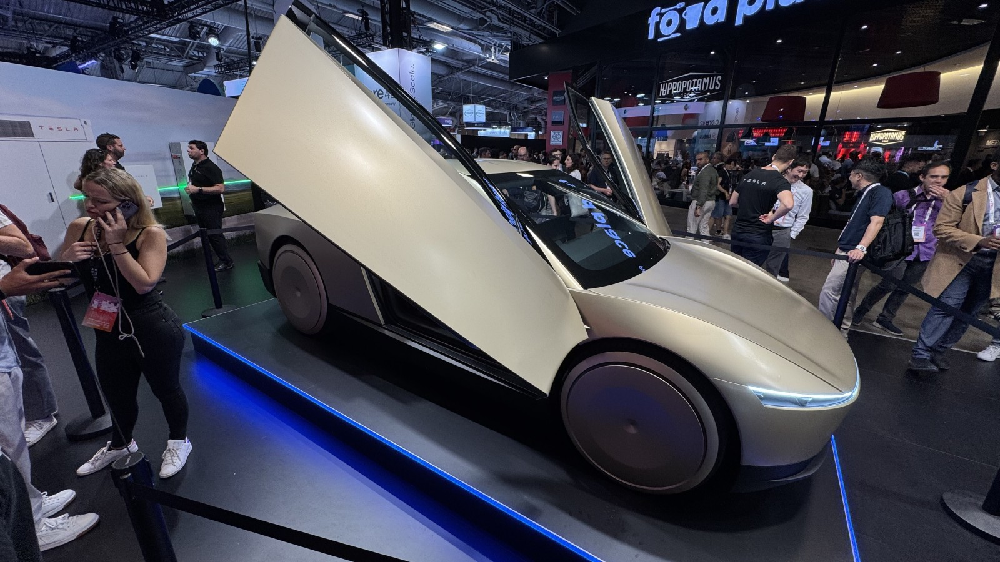
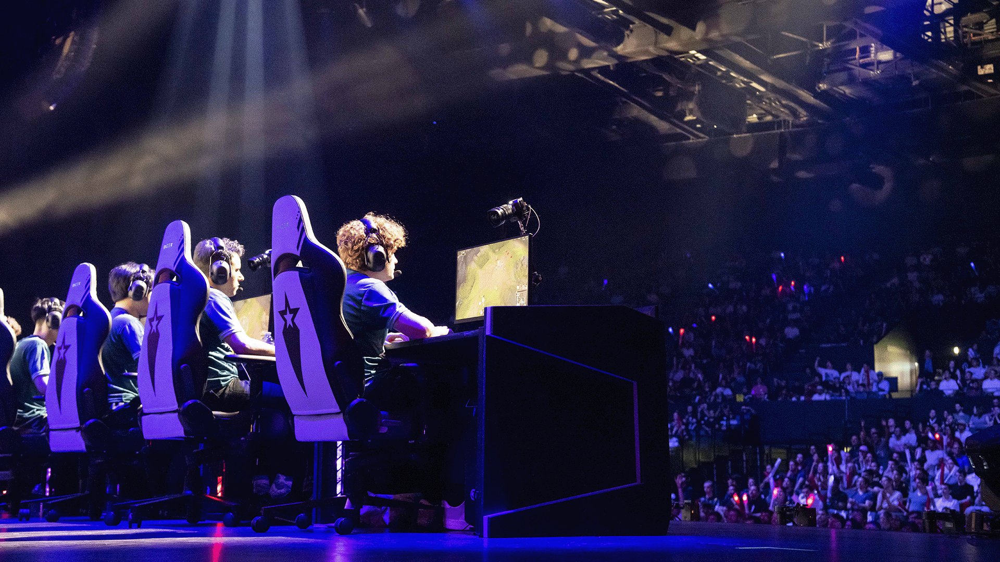
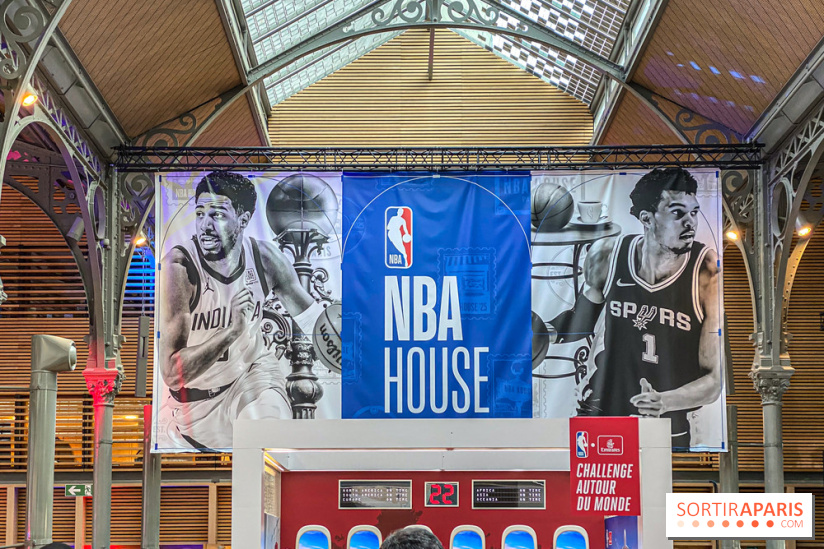
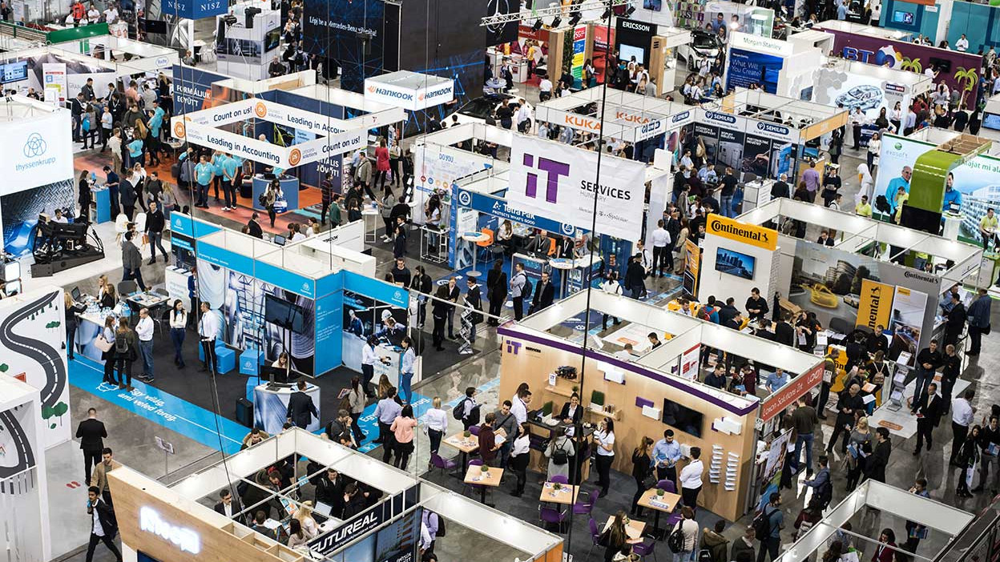
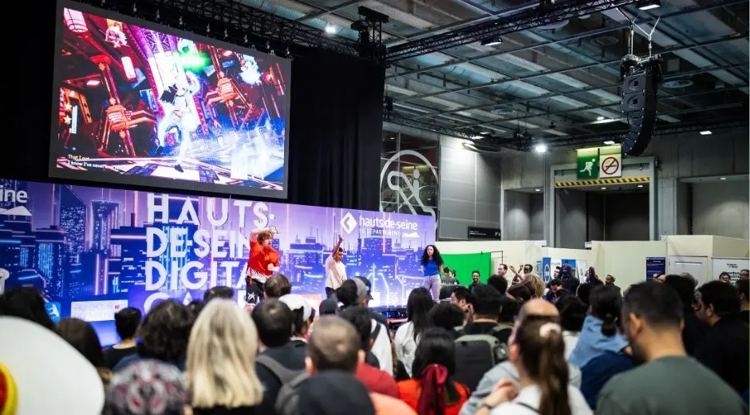
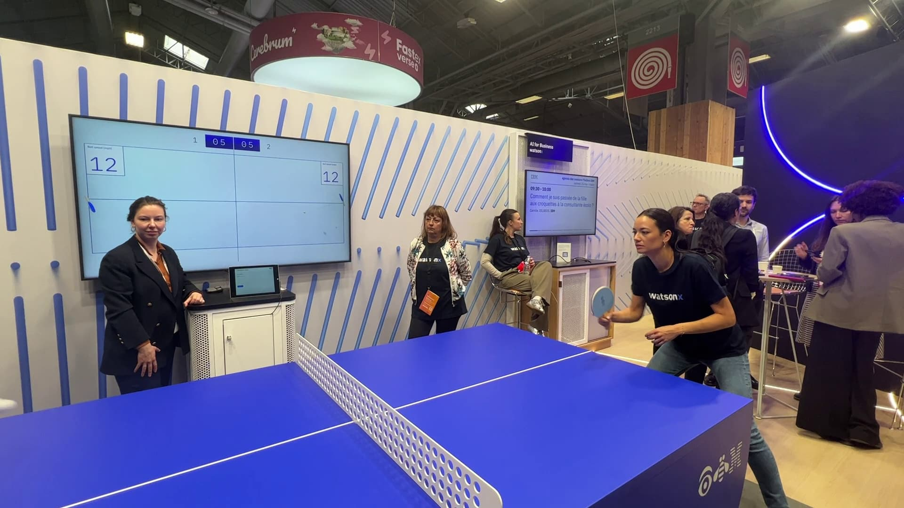
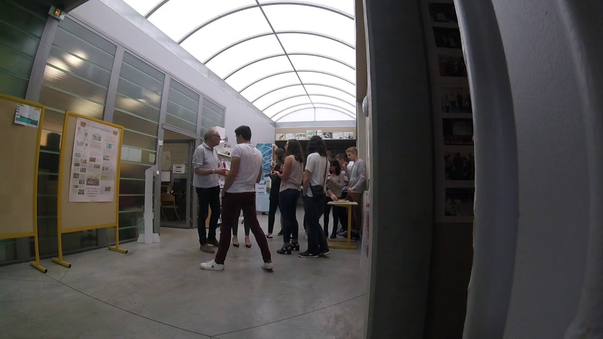
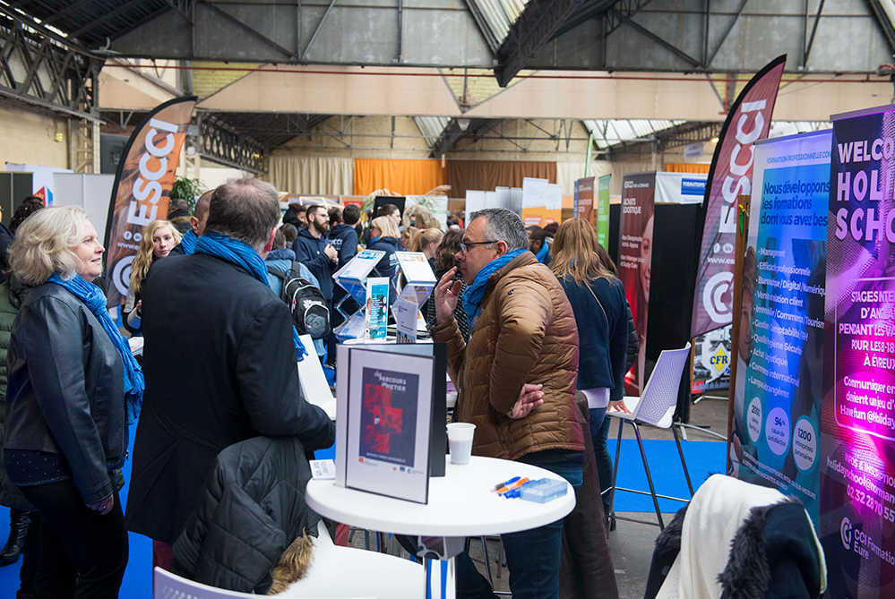

VivaTech 2025
Date :Du 11 au 14 juin 2025
Moments forts : Voir les innovationsTester les innovationsCommencer mes projets personnelsPostuler aux stages et alternances
Hauts-de-Seine Digital Games 2025
Date :4 et 5 avril 2025
Moments forts : Découvrir les jeux, les métiers du jeu vidéoJouer aux tournoisPostuler aux stages et jobs d'été
Palmarès : Quart de finaliste au tournoi HDS Pro sur le jeu EA FC 25(avec 4 victoires et 1 défaite)
NBA Paris House 2025
Date :23 janvier 2025
Moments forts : Découvrir les coulissesJouer aux jeuxApprofondir le monde du travail
Salon de l'informatique et du numérique L'Etudiant
Date :14 décembre 2024
Moments forts : Découvrir les formationsMe préparer pour l'école d'ingénieurs, mieux m'orienter pour le post-BUT
Hauts-de-Seine Digital Games 2024
Date :25 mai 2024
Moments forts : Découvrir les jeux et les métiers du jeu vidéoJouer aux tournoisPostuler aux stages
VivaTech 2024
Date :Du 22 au 25 mai 2024
Moments forts : Voir les innovationsElargir mon réseau professionnelPostuler aux stages
Journée portes ouvertes à l'IUT d'Evreux
Date : 4 février 2023
Moments forts :Présentation de l'IUT d'EvreuxTest homologation du produitImpression laser du packagingLogistique(Rangement des emballages au camion)
Salon de l'orientation à Evreux - Acte II
Date : 27 janvier 2023
Moments forts : Découvrir les formationsMe préparer pour le post-bac
Journée immersion à l'IUT d'Evreux
Date :21 novembre 2022
Moments forts :Présentation de l'IUT d'EvreuxTest homologation du produitImpression laser du packagingLogistique(Rangement des emballages au camion)
Salon de l'orientation à Evreux
Date : 27 mai 2022
Moments forts : Découvrir les formationsMe préparer pour le post-bac
Stage de découverte : Boulanger-Pâtissier

Dates :Du 9 au 13 décembre 2019
Lieu :Montreuil, Île-de-France
Missions :Découverte du monde de l’entreprisePréparation des produitsLivraison de stocksNettoyage des lieux